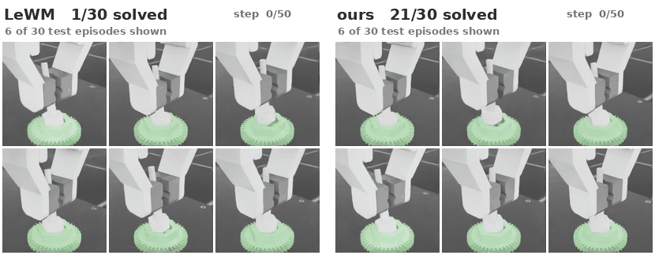
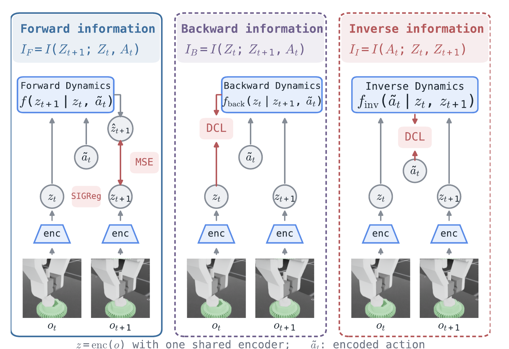
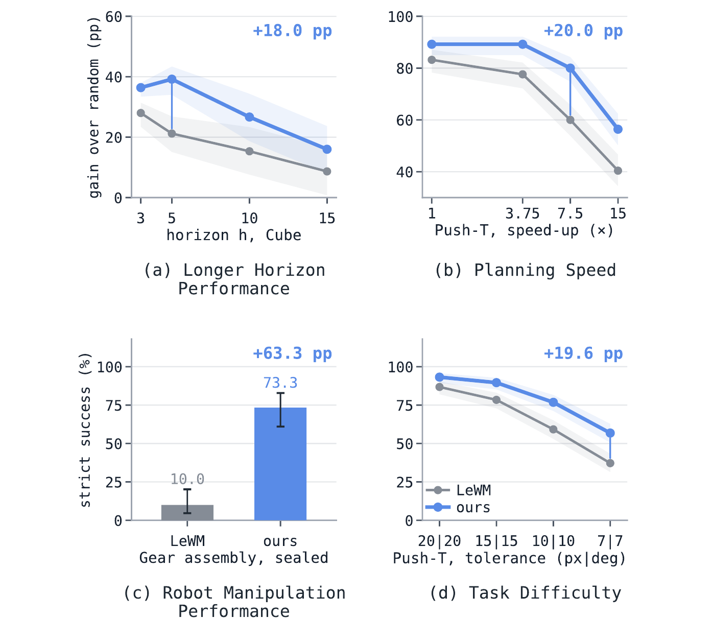
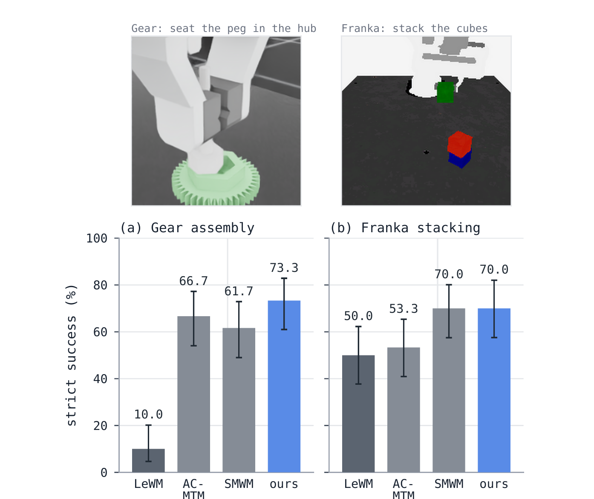
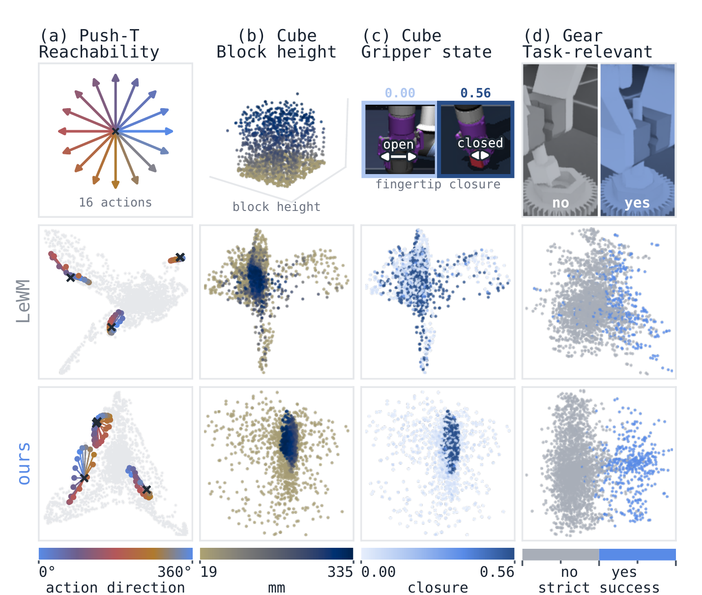

Vrije Universiteit Amsterdam, The Netherlands
A decoder-free latent world model is trained not only to predict the next latent state, but also to explain the current state from where it lands and to recover the action that connects them. Together, the three objectives maximise the S-information of the transition (Zt, At, Zt+1) — and the resulting latent space plans better, further ahead, and with up to 7.5× less search.
Same encoder, same planner, same data — only the training objective differs. Six of thirty test episodes, side by side: LeWM solves 1 of 30, Σ-LeWM solves 21 of 30.

Forward, backward and inverse dynamics are three readings of one transition.
LeWorldModel (LeWM) learns a latent transition f(zt, at) → zt+1 without a decoder. Σ-LeWM adds two auxiliary predictors, used only during training, so that every variable of the transition is predictable from the other two. Each predictor is a lower bound on a mutual-information term, and the three terms are the three orientations of one shape.
Predict the next latent from the current latent and the action. This is the standard LeWM objective, and the only predictor used at test time.
Explain the current latent from where the action lands. A contrastive backward-dynamics head keeps states that lead to the same outcome close together.
Recover the action from two consecutive latents. The embedding must keep whatever the action changed — the control-relevant structure.
The sum of the three directional terms is the total correlation plus the dual total correlation — the S-information, written Σ. Hence the name.

| Method | Push-T | Cube | TwoRoom | Reacher |
|---|---|---|---|---|
| Random policy (floor) | 2.0 | 43.6 | 23.6 | 13.6 |
| LeWM | 85.2 | 64.8 | 90.4 | 87.2 |
| Sub-JEPA | 93.2 | 69.2 | 94.0 | 84.0 |
| RC-aux | — | 68.4 | 94.8 | 84.8 |
| Σ-LeWM (ours) | 93.6 | 82.8 | 91.2 | 88.0 |
Table I — Success rate (%) on the four standard LeWM benchmarks, same CEM planner (h=5, 30 iterations), 5 seeds × 50 episodes.


PCA of the frozen latents, coloured by physical quantities. With the backward and inverse objectives, block height, gripper closure and task success each occupy a compact, separable region; one-step reachability from a state forms a clean fan of sixteen action directions. A learned GC-IDM planner also does better on these latents than on LeWM's (Cube: 97.6% vs. 90.4%).

Cube, h=5, success %. Contrastive (DCL) variants; adding either auxiliary term helps, adding both helps most.
@article{sigma-lewm2027,
title = {{\Sigma}-LeWM: Learning World Models via S-Information for Robot Control},
author = {Zu, Xinrui and Przystupa, Michael and Yang, Zhao and Yu, Shujian and Luck, Kevin Sebastian},
year = {2027}
}